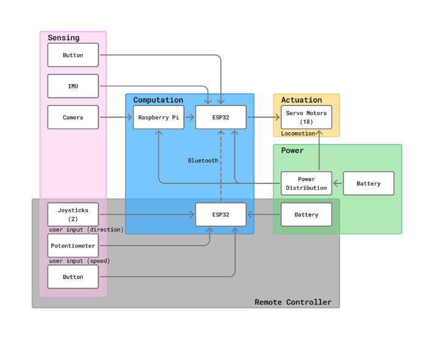
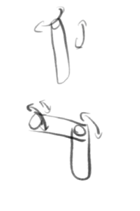
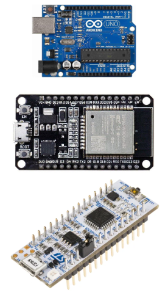
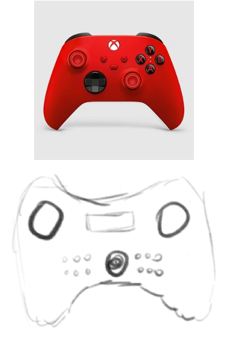

System Requirements
The Hexapod was designed against a rigorous set of requirements spanning locomotion, physical constraints, packaging, power, and safety.
Locomotion & Maneuvering
| ID | Requirement | Specification |
|---|---|---|
| L-1 | Locomotion method | Controlled through legs |
| L-2 | Travel directions | At least 2 directions (forward and backward) |
| L-3 | Turning radius | Zero-degree turning radius (turn in place) |
| L-4 | Navigation | Navigate to a designated point within 1 minute |
Size, Weight, Payload & Rider Geometry
| ID | Requirement | Specification |
|---|---|---|
| S-1 | Footprint | ≤ 5 ft × 5 ft |
| S-2 | Rider height | 2–3 ft off the ground |
| S-3 | Device weight | < 150 lbs |
| S-4 | Payload capacity | Carry up to 170 lbs |
| S-5 | Seating | Cross-legged or standard chair seated |
Packaging & Transport
| ID | Requirement | Specification |
|---|---|---|
| P-1 | Shipping case | 3 ft × 3 ft case |
| P-2 | Disassembly | ≤ 7 parts |
Power
| ID | Requirement | Specification |
|---|---|---|
| PW-1 | Battery life | ≥ 30 minutes continuous operation |
Safety
| ID | Requirement | Specification |
|---|---|---|
| SF-1 | Performance safety | Safe in a dance performance environment, no rough edges |
| SF-2 | Ride smoothness | Smooth enough that rider does not need to be strapped in |
| SF-3 | Emergency stop | E-stop accessible to both riders, positioned dead center |
| SF-4 | Auto-shutoff | IMU-based auto shut-off if robot flips |
Functional Architecture
The functional architecture decomposes the hexapod into five primary subsystems, each responsible for a distinct domain of operation.

Subsystem Descriptions
- Power: Distributes electrical energy from the onboard battery to all electronic and mechanical subsystems.
- Compute: Performs inverse kinematics calculations, state estimation using IMU data, and generates gait patterns for walking and dancing.
- Control: Receives user input from the wireless controller (joystick directions, speed dial, buttons) and translates these into high-level movement commands.
- Locomotion: Drives 18 BLDC motors (3 per leg × 6 legs) via ODrive controllers, converting electrical signals into physical leg motion.
- Mechanical System: Provides structural support for the payload (riders) and transmits forces generated by servos through leg linkages to the ground.
Cyberphysical Architecture
The cyberphysical architecture maps functional subsystems onto specific hardware and software components.

Hardware Components
| Domain | Components | Role |
|---|---|---|
| Sensing | IMU, Camera, E-stop Button | Orientation, visual data, emergency override |
| Computation | Raspberry Pi + ESP32 | RPi: IK, state estimation, gait generation; ESP32: real-time servo control & Bluetooth |
| Actuation | 18 Servo Motors | Drive coxa, femur, and tibia joints on all six legs |
| Power | Battery + Power Distribution Board | Supply and regulate power to all subsystems |
| Remote Controller | ESP32, Joysticks, Potentiometer, Button | Transmit operator commands via Bluetooth |
System Design Description

Updated CAD renderings of the leg assemblies will be added once motor selection is finalized.
Motor Control Subsystem
18 brushless DC motors controlled via ODrive controllers, three per leg. The design uses a split motor strategy — 6 high-torque coxa motors and 12 lighter femur/tibia motors. Each leg has:
- Coxa joint (hip yaw): Lateral rotation for turning and strafing
- Femur joint (hip pitch): Vertical lift for stepping
- Tibia joint (knee pitch): Lower leg extension for ground contact
Leg segments fabricated from aluminum and 3D-printed high-strength polymer.
Sensor Subsystem
- IMU (MPU6050): 6-axis accelerometer/gyroscope for orientation and flip detection
- Camera: Forward-facing on Raspberry Pi for potential CV integration
- Joysticks: Two analog joysticks for X/Y directional input
- Potentiometer: Continuous speed control dial
Software Integration Subsystem
- IK Engine: Geometric solver converting foot positions to joint angles
- State Estimation: IMU fusion for orientation and unsafe-condition detection
- Gait Generation: Tripod gait (fast), wave gait (stable), custom dance gaits
- Bluetooth Communication: Bidirectional link between controller and onboard system
Layered architecture: Communication Layer (Bluetooth I/O) → Control Layer (commands + sensor data) → Execution Layer (IK + servo driving).
Design Trade Studies
Leg Configuration: 2 DOF vs. 3 DOF

| Criterion | 2 DOF | 3 DOF |
|---|---|---|
| Zero-degree turning | Not achievable | Fully supported |
| Lateral movement | Limited | Omnidirectional |
| Complexity | Simpler (12 motors) | More complex (18 motors) |
| Dance expressiveness | Restricted | Highly expressive |
Decision: 3 DOF. Zero-degree turning radius is a hard requirement, and lateral movement is essential for dance. The added complexity is justified.
Body Shape: Hexagonal vs. Rectangular

| Criterion | Hexagonal | Rectangular |
|---|---|---|
| Dual-rider seating | Awkward layout | Natural arrangement |
| Manufacturing | Angled cuts, harder | Right-angle, easier |
| Internal volume | Less usable space | More usable space |
| Transportability | Wider profile | Fits 3x3ft constraint |
Decision: Rectangular. Better for dual-rider seating, easier manufacturing, and fits the shipping constraint.
Microcontroller: Arduino vs. ESP32 vs. STM32

| Criterion | Arduino | ESP32 | STM32 |
|---|---|---|---|
| Processing power | Low (8-bit AVR) | Moderate (dual-core 240MHz) | High (ARM Cortex-M) |
| Wireless (Bluetooth) | External module | Built-in BLE & Wi-Fi | External module |
| PWM channels | Limited | 16 channels | Many channels |
| Cost | Low | Low | Moderate |
Decision: ESP32 + Raspberry Pi. ESP32 provides built-in Bluetooth and servo control; RPi handles IK, state estimation, and gait generation.
Controller: Custom vs. Premade (Xbox/PS)

| Criterion | Custom | Premade (Xbox/PS) |
|---|---|---|
| Input customization | Fully tailored (joysticks, pot, buttons) | Generic layout |
| Bluetooth integration | Direct ESP32-to-ESP32, low latency | Standard HID, may have latency |
| Development effort | Higher (PCB, firmware) | Lower (off-the-shelf) |
| Reliability | Dedicated, no unwanted features | May have connectivity quirks |
Decision: Custom controller. Hexapod-specific controls (gait selection, speed dial) and reliable ESP32-to-ESP32 link.